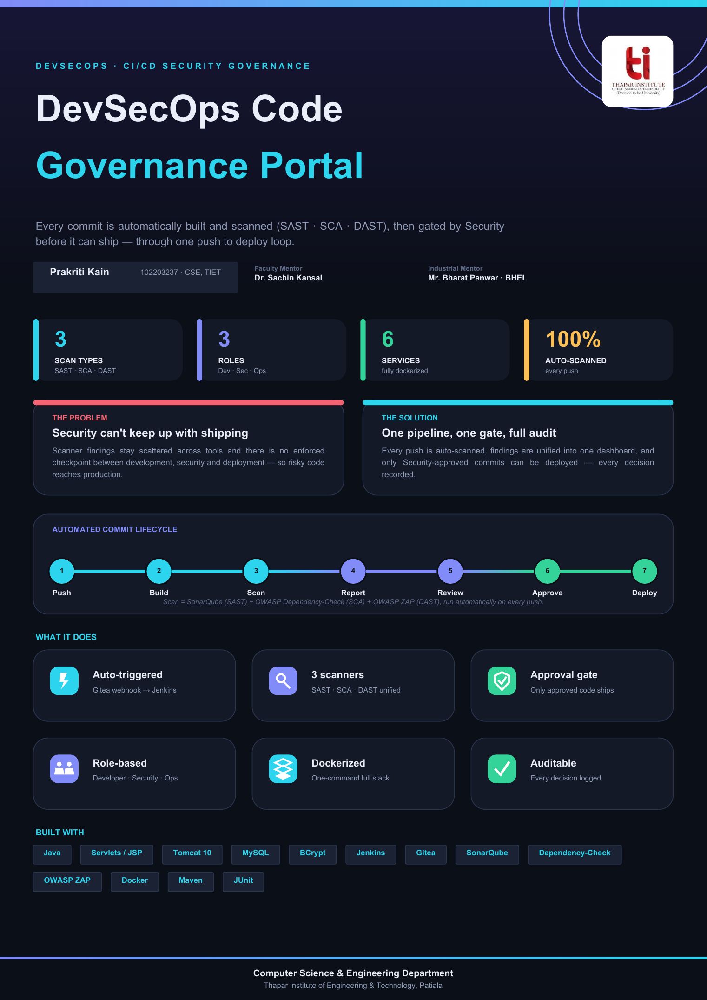

A web portal on top of a CI/CD pipeline that automatically scans every commit (SAST · SCA · DAST) and gates deployment behind an explicit Security approval — one push-to-deploy loop.
Scan = SonarQube (SAST) + OWASP Dependency-Check (SCA) + OWASP ZAP (DAST), run automatically on every push.
Gitea webhook → Jenkins build on every push.
SAST, SCA & DAST normalized to one severity model.
Only Security-approved commits can deploy.
Server-enforced Developer · Security · Operations views.
The whole stack runs from one Docker Compose file.
Every approval, rejection & deployment is logged.

A Gitea push fires a Jenkins pipeline that builds the code and runs all three scanners. Results are POSTed to the portal's REST API and written to MySQL. The Security team reviews findings and approves or rejects each commit; only approved commits reach the Operations deployment queue.
A self-contained build of the portal with seeded demo data — log in and explore all three role dashboards.